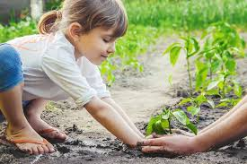
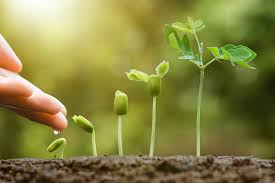
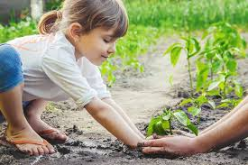
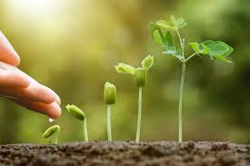
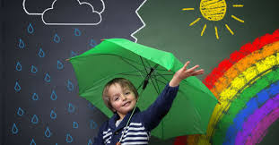
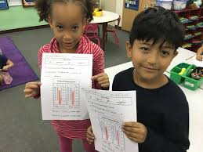
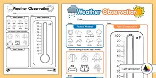

Learning Experiences
0-2 Years
Nature Walks


Take infants on nature walks, allowing them to observe trees, flowers, and insects. Talk to them about what they see and hear.
2-3 Years
Simple Experiments


Conduct simple experiments like mixing colors or watching baking soda react with vinegar. Encourage toddlers to observe and describe what happens.
3-5 Years
Planting Seeds
 



Teach children about plant growth by planting seeds and observing them sprout. Discuss the needs of plants like water, sunlight, and soil.
6-8 Years
Weather Observations



Encourage children to observe and record weather patterns. Discuss concepts like temperature, clouds, and precipitation.